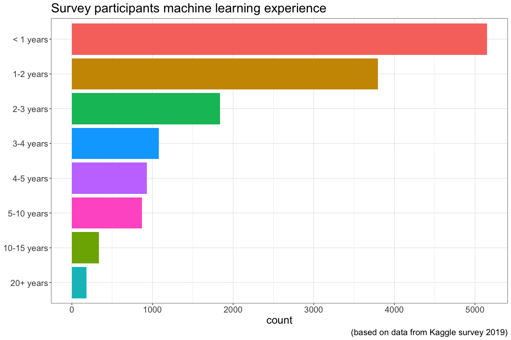
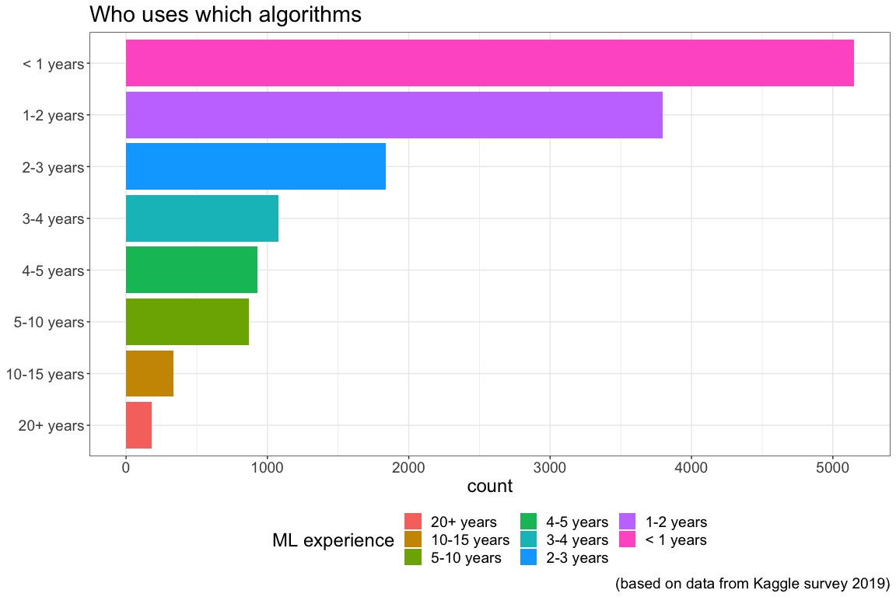
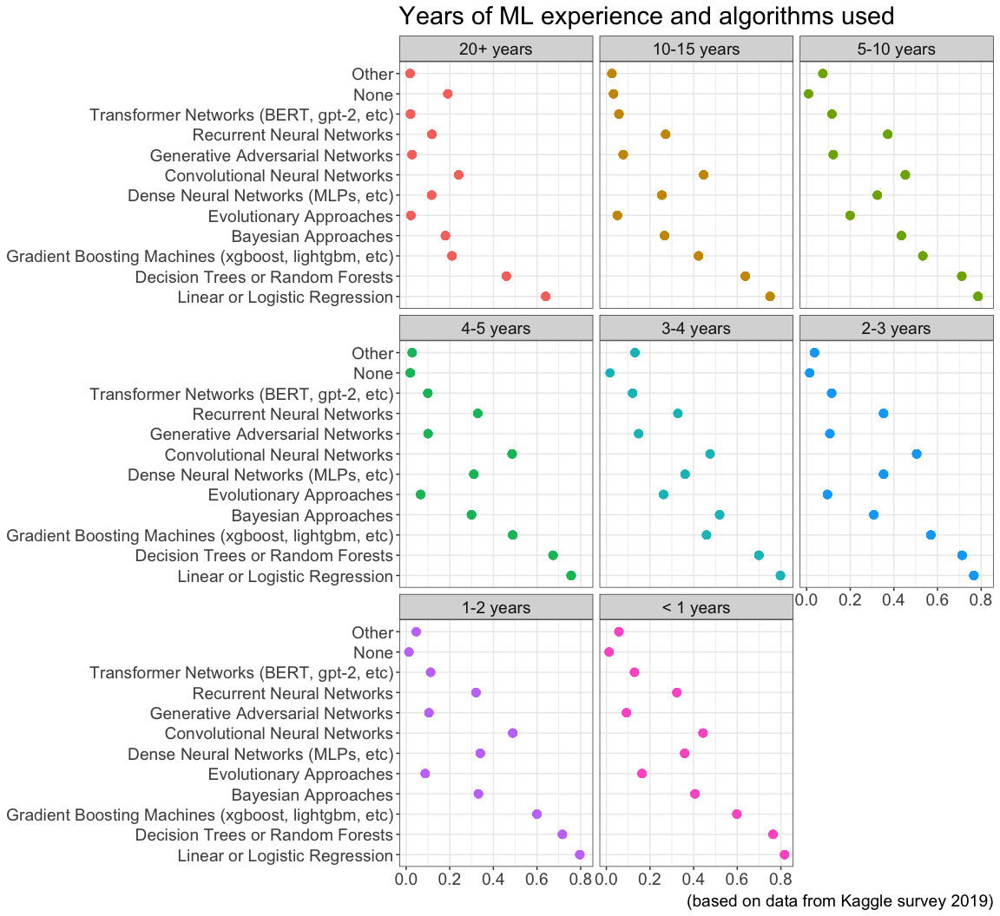

26.3 Machine learning experience and algorithms
Most of the survey participants have less than 3 years machine learning experience as can be seen in the graph below. Due to fact that the number in each category differs a lot a representation of percentages is beneficial for some analysis.

The usage of algorithms for different duration of experience is given in the graph below.

Splitting the graphs up for each category of experience and plotting the percentage of usage for the given experience level gives an insight into how the usage of algorithms differs over levels of experience

Findings:
- Regression and trees are popular at all level of experience
- Neural networks are more popular for less experienced
- 20% of very experienced use no algorithm